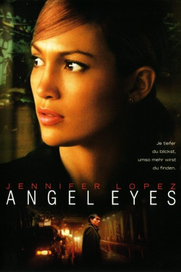

#5833 Angel Eyes
 
 IMDB-Wertung: 5.6 / 10
IMDB-Wertung: 5.6 / 10  Tomatometer: 33
Tomatometer: 33  Metascore: 0
Metascore: 0 
Bei einer Verfolgungsjagd wird die Chicagoer Polizistin Sharon Pogue von einem geheimnisvollen Fremdling aus einer lebensbedrohlichen Situation gerettet. Der Unbekannte kommt Sharon vertraut vor, aber sie hat keine Ahnung, woher woher sie ihn kennen könnte. Die beiden beginnen, sich privat öfter zu treffen. Als sie sich ineinander verlieben, tauchen nach und nach Erinnerungsbruchstücke aus der Vergangenheit auf. Sowohl Sharon als auch der zuvor Unbekannte, der Steven Lambert heißt, schlagen sich mit unbewältigten Problemen herum, denen sie sich bislang nicht gestellt haben. Gemeinsam wollen Sharon und Steven aber daran arbeiten, ihre Situation wieder in den Griff zu bekommen. Dafür nimmt Sharon auch Konflikte mit ihren Eltern in Kauf, während Steven die tragische Vergangenheit in Angriff nehmen muss.
Jahr: 2001
Dauer: 98 Minuten
FSK: 12
Land: USA Studio: Warner Bros.Tonspuren:
Untertitel:
Auflösung: 1080p (1920x1080) Größe: 3307 MB
Genre: Drama, Liebe
Regisseur: Luis Mandoki
Drehbuch: Hilde Berger
Soundtrack:
Darsteller:
 Jennifer Lopez als Sharon Pogue
Jennifer Lopez als Sharon Pogue Jim Caviezel als Steven 'Catch' Lambert
Jim Caviezel als Steven 'Catch' Lambert Jeremy Sisto als Larry Pogue, Sr.
Jeremy Sisto als Larry Pogue, Sr. Terrence Howard als Robby
Terrence Howard als Robby Sonia Braga als Josephine Pogue
Sonia Braga als Josephine Pogue Victor Argo als Carl Pogue
Victor Argo als Carl Pogue Monet Mazur als Kathy Pogue
Monet Mazur als Kathy Pogue Shirley Knight als Elanora Davis
Shirley Knight als Elanora Davis- Daniel Magder als Larry Pogue, Jr.
- Guylaine St-Onge als Annie Lambert
 Jeremy Ratchford als Ray Micigliano
Jeremy Ratchford als Ray Micigliano Peter MacNeill als Lieutenant Dennis Sanderman
Peter MacNeill als Lieutenant Dennis Sanderman- Kari Matchett als Candace
- Michael Cameron als Charlie
- Marcello Thedford als Peebo
- Dave Cox als K-Dog
- Dan Petronijevic als Fighting Kid
- Stephen Kay als Tony Pindella
- Grant Nickalls als Joe
 Matt Birman als Driver
Matt Birman als Driver- Chuck Campbell als Young Man
- Stephanie Moore als Officer Vanessa
 Darren Marsman als Suspect #2
Darren Marsman als Suspect #2- William Lucas als Police Officer , uncredited
- Sheri Nadel als Young Lady , uncredited
- Rey-Phillip Santos als Nightclub Patron , uncredited
 Michael Sercerchi als Bar Tender , uncredited
Michael Sercerchi als Bar Tender , uncredited- Connor McAuley als Max Lambert
- Eldridge Hyndman als Jamal
- Ron Payne als Priest
- Paul A. MacFarlane als Photographer
- Jim Feather als Old Man
- Eric Coates als Car Man
- Jeff J.J. Authors als Other Young Man
- John Shepard als Other Old Man
- Ron Johnston als Bass Player
- Nick Ali als Trumpeter
- Brian Dickinson als Piano Player
- Barry Romberg als Drummer
- Neil Brathwaite als Flautist
- Kathy Carter als Female Cop
- Brian Jagersky als Police Officer #2
- Chris Lamon als Police Officer #1
- Brenda Adams als N.D. Pedestrian #1
- Don Stockford als N.D. Pedestrian #2
- Matthew Vanhart als Fighting Street Kid #2
- Darcy Roy als Gang Member , uncredited
- Victor Sutton als Wedding guest , uncredited
Datei: X:\2001\Angel Eyes (2001, FSK12, 1920x1080).mkv seit 27.03.2017
Festplatte: HD 1996-2002
 Es gibt insgesamt 102 Filme in der Gruppe '2001'
Es gibt insgesamt 102 Filme in der Gruppe '2001'